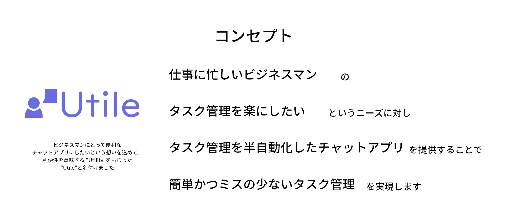
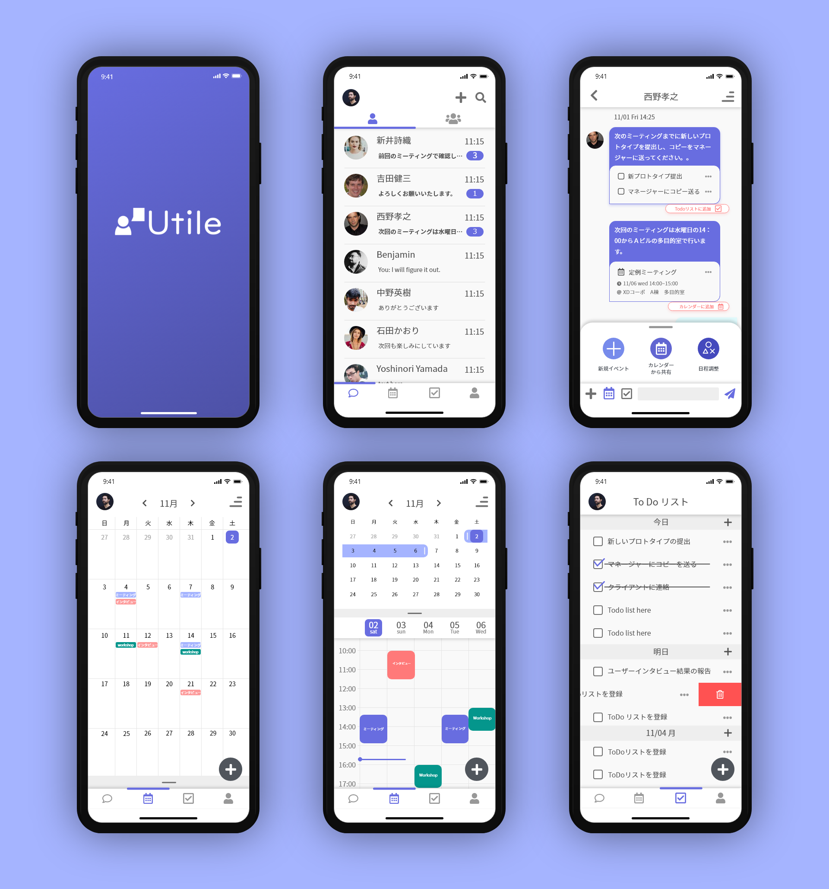
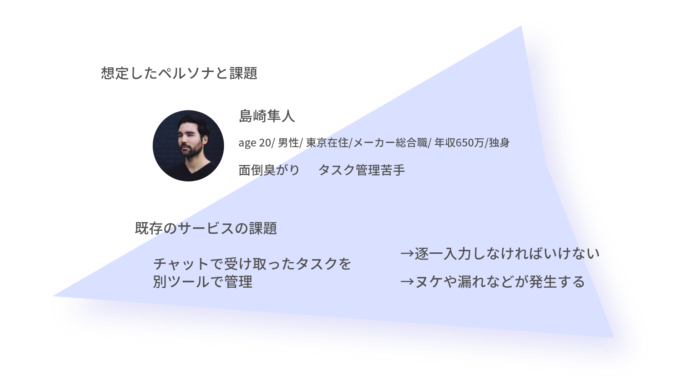
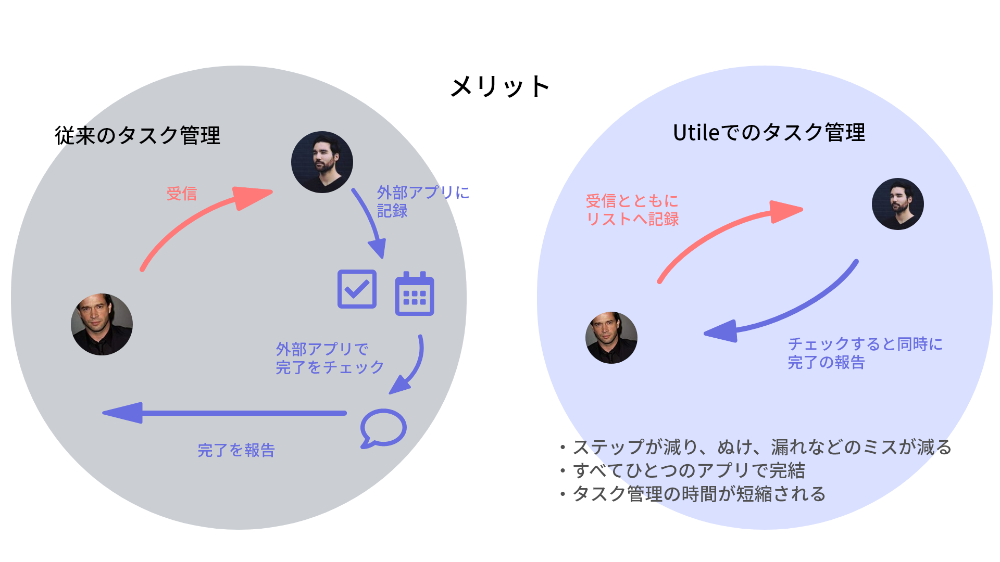
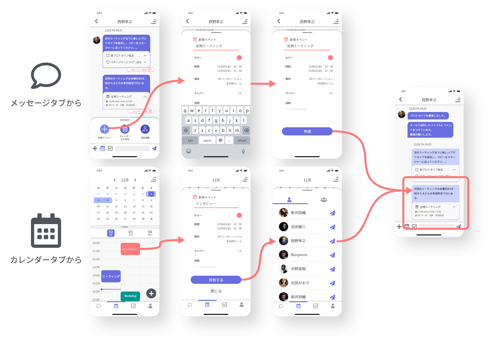
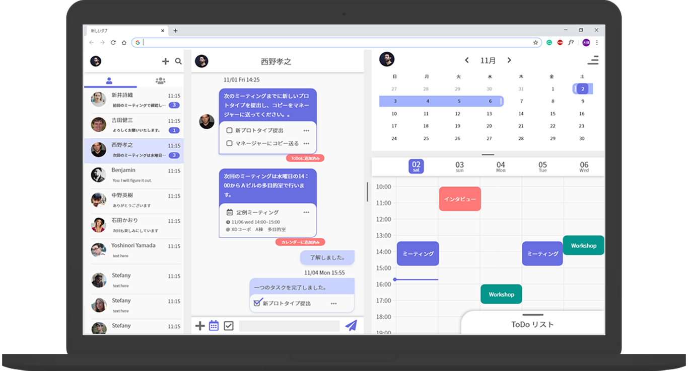
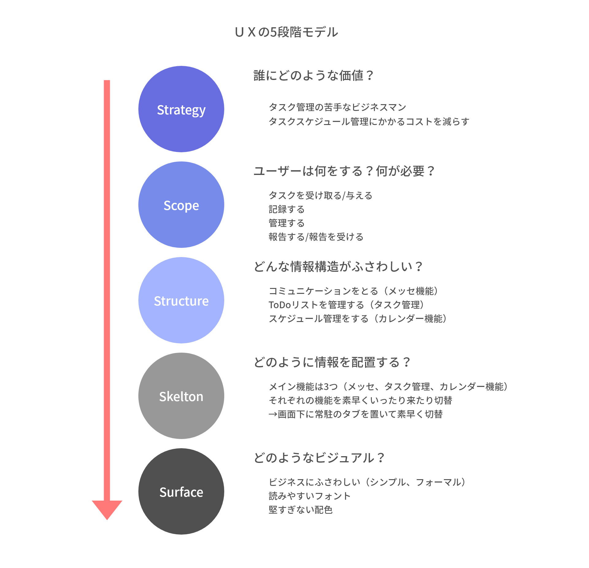

Cocoda!というデザイン学習サービスの課題としてビジネス用のメッセージアプリの製作を行った。 ユーザーリサーチを行ったところ、ビジネスにおいてチャットツールの主な用途の一つにタスク共有やスケジュールの調整などがあることが分かった。 しかしビジネスによく利用されている既存のサービスを実際に使ってみると、多くのビジネスチャットサービスにはタスク、スケジュール管理の機能が備わっておらず、外部のタスク管理ツールや手帳などを利用し個人が管理する状況が一般的である。 そこでそれらのタスクスケジュール管理機能をチャット機能とシームレスに連動させたビジネスチャットサービスを考えた。
 想定したペルソナは26歳のメーカー総合職勤めの独身男性。会社内でも若手の彼は上司や同僚から多くのタスクを受け取る。会社内の連絡ではビジネスチャットサービスを使用しているが、タスクやスケジュール管理はgoogle calendarを使用している。めんどくさがりなところのある彼はタスクの記録を後回しにしてしまい忘れてしまうことがある。

既存のサービスでのタスク管理の問題点は主に3つ考えられる。
1つ目は受け取ったタスクを逐一別のプラットフォームに入力しないといけないため、タスク管理にかかる時間的コストが高いこと。
2つ目はタスクの進捗の連絡と個人での管理が別のプラットフォームで行われているため非効率的ということ。
3つ目はタスク管理の作業ステップが多いことによりヌケ、漏れなどのリスクが高まるということ。
Utileがユーザーに提供できる価値の一つはシームレスなタスク管理機能である。従来のビジネスチャットサービスではタスクやスケジュールを受け取ったのちに別のアプリなどでタスクスケジュール管理を行う。別アプリにタスクを入力しなおし、完了したのちにまたビジネスチャットに戻り完了の連絡を入れなければいけない。そこで今回のアプリではすべてが一つのアプリで完了し、タスクの記録や報告の半自動化を行った。
さらにタスクやスケジュールの送り手側のユーザビリティ向上にも取り組んだ。シームレスな共有を可能にするために三機能いずれのタブからでもタスクやスケジュールの共有が可能になるようにした。
さらにユーザー調査の結果、ビジネスチャットはパソコンからの使用も多いことが分かったためデスクトップ版のUIデザインも行った。パソコンの画面にはスペースの余裕があるので3機能すべてを1画面上に配置しそれぞれの機能にすばやくアクセスできるようにした。
今回の作品のデザインプロセスをＵＸ5段階モデルにあてはめて確認する。
このサービスコンセプトは既存の異なる機能を持っているアプリを複合するようなものであり、今回デザインするにあたってLine, Messenger, Slack, Chatworks などのメッセージアプリ、Google Calendarなどのカレンダーアプリ、ToDoリスト管理アプリなどを研究して参考にした。しかし今回デザインがそれらと異なるのは、異なる機能をシームレスにつなげる必要があることであり、マイクロインタラクションなどを用いてわかりやすいＵＩをつくることにこだわった。実際の動きはプロトタイプで確認していただきたい。また、今回はUXの5段階モデルを利用して設計を行い、決まったプロセスに従って考えることで一貫したコンセプトの下でデザインを行えることを体感できた。しかし、今回のデザインコンセプトを考えるうえで本サービスをどのようなビジネスモデルで展開できるかについてあまり考えることができていなかったことにも気づいたので今後の製作では戦略の段階からしっかりと詰めていきたい。
下記のリンクから今回の作品のモバイル版のプロトタイプを参照可能。
Test the prototype